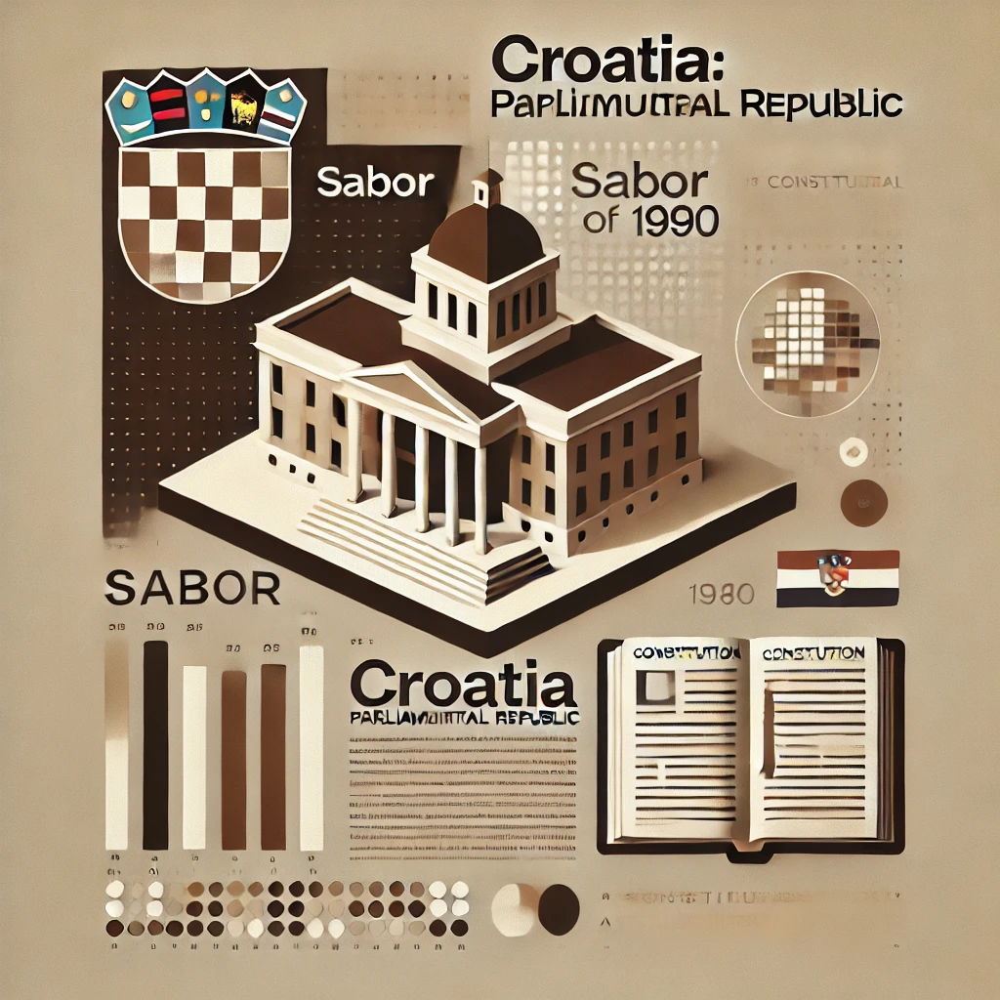
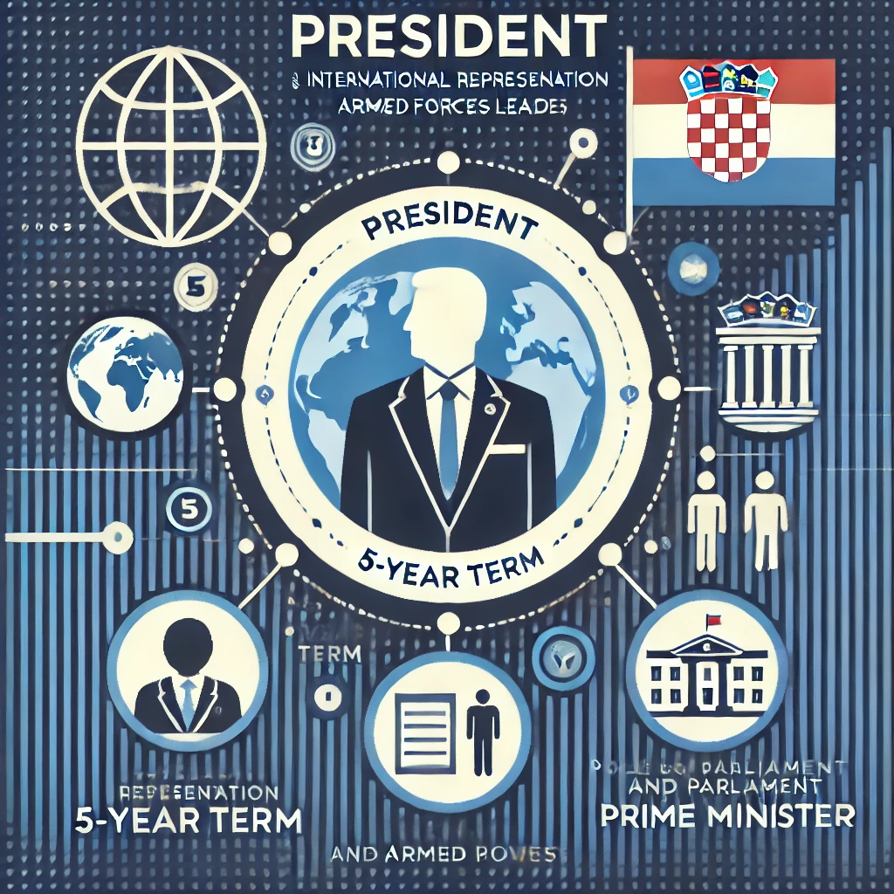
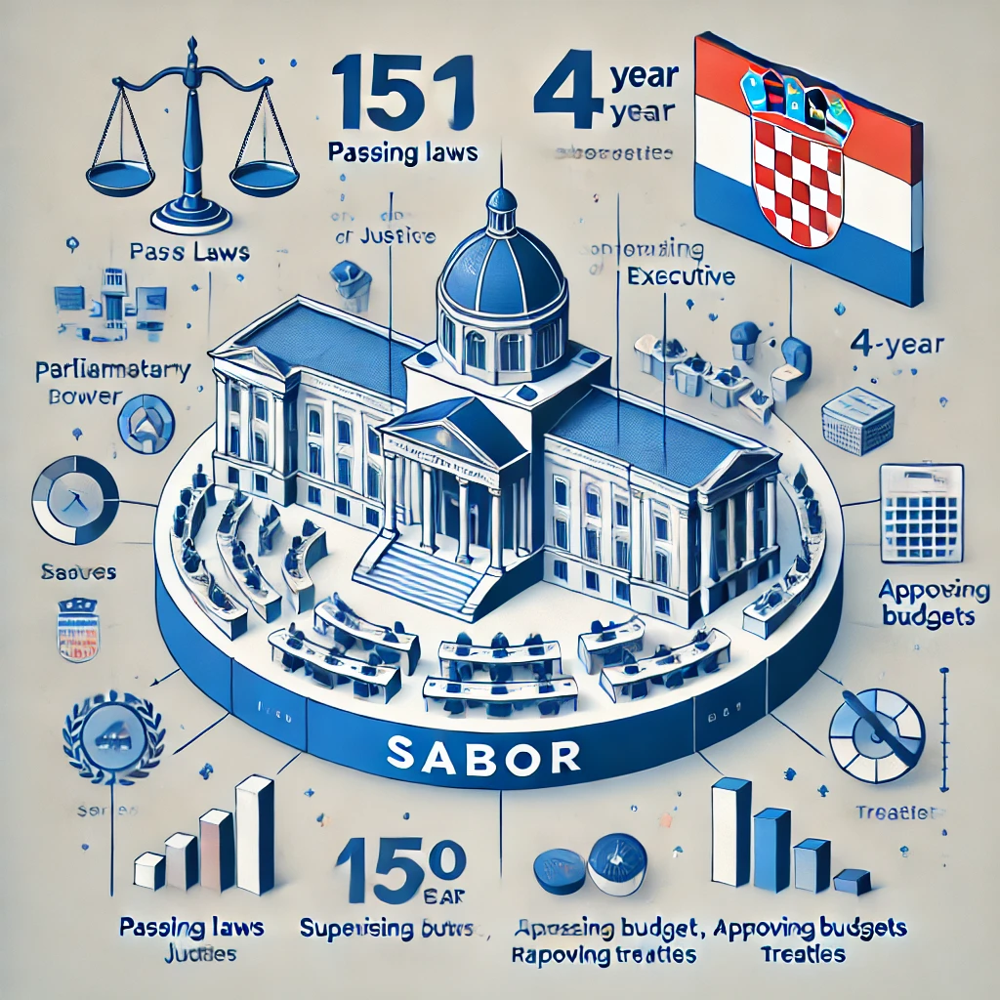
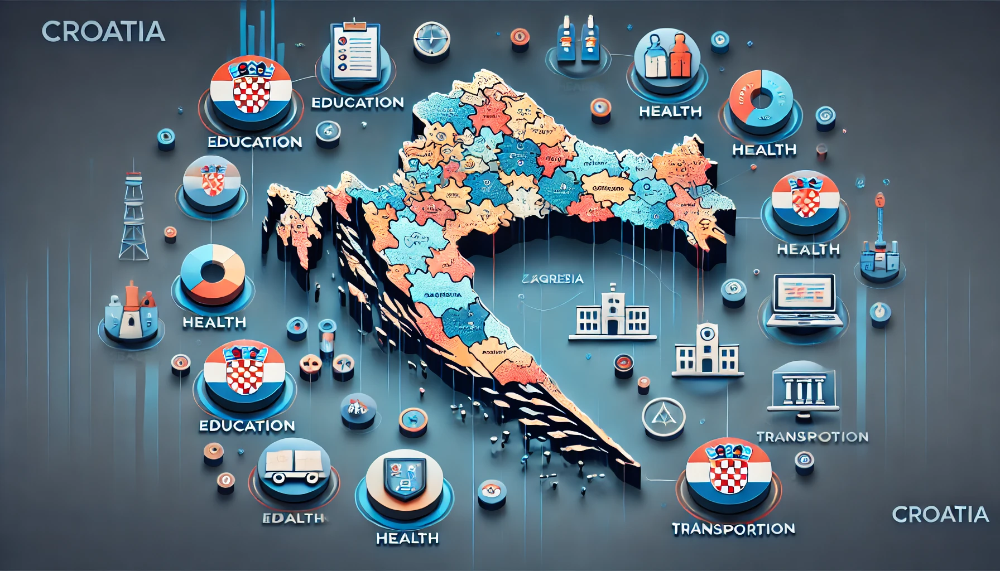
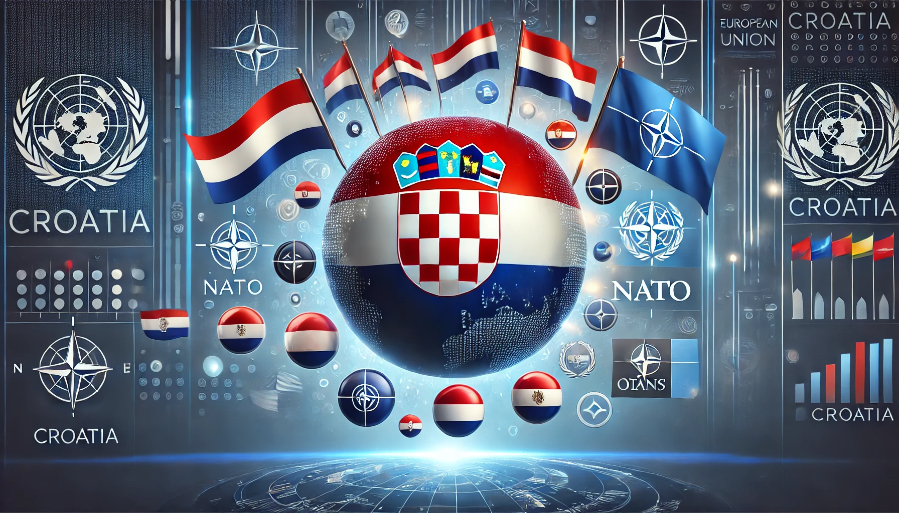

Forma de Gobierno
Croacia, ubicada en el sureste de Europa en la región de los Balcanes, es una república parlamentaria unitaria. Su sistema político se basa en la Constitución de 1990, que marcó el comienzo de su independencia tras la disolución de Yugoslavia. Como miembro de la Unión Europea desde 2013, la OTAN desde 2009 y la ONU desde 1992, Croacia ha consolidado su posición como un estado democrático y moderno. Croacia es una república parlamentaria democrática unitaria. Tras el colapso de la Liga Comunista en el poder, Croacia adoptó una nueva constitución en 1990 –que sustituyó a la de 1974 adoptada por la República Socialista de Croacia– y organizó sus primeras elecciones multipartidistas.Forma de Gobierno
Tipo de gobierno: Croacia es una república parlamentaria democrática, donde el parlamento (Sabor) tiene el papel central en la toma de decisiones políticas Constitución: Se rige por la Constitución de 1990, que establece los principios democráticos, la protección de derechos y la organización del Estado
Poder Ejecutivo
Presidencia: Rol: El presidente es el jefe de Estado, responsable de representar a Croacia en el ámbito internacional, comandar las fuerzas armadas y colaborar en la política exterior. Elección: Es elegido por voto directo cada cinco años, con un límite de dos mandatos consecutivos Primer Ministro: Rol: Es el jefe de Gobierno, encargado de implementar las políticas internas y externas y dirigir la administración pública. Nombramiento: Es propuesto por el presidente y requiere la aprobación del Parlamento.
Poder Legislativo
Estructura: El Sabor es el parlamento unicameral de Croacia. Tiene 151 miembros, elegidos por cuatro años mediante un sistema de representación proporcional Funciones: Aprueba leyes, supervisa al Ejecutivo, decide sobre el presupuesto y ratifica tratados internacionales
Poder Judicial
Sistema: Es independiente de los otros poderes y protege la legalidad y los derechos de los ciudadanos. Incluye tribunales locales, regionales y de apelación. Corte Constitucional: Garantiza la constitucionalidad de las leyes y resuelve conflictos entre poderes del Estado.
División Administrativa
Regiones: Croacia se divide en 20 condados (županije) y la ciudad de Zagreb, que tiene un estatus especial como unidad administrativa autónoma Gobiernos locales: Las regiones y ciudades tienen cierto grado de autonomía en áreas como educación, salud y transporte.
Participación Internacional
Croacia es miembro de la Unión Europea desde 2013, de la OTAN desde 2009 y de la ONU desde 1992. También participa activamente en el Consejo de Europa y la OSCE
Conclusion
Croacia es una república estable y democrática con instituciones sólidas que garantizan la separación de poderes. Su integración en organismos internacionales refuerza su posición como un actor clave en la región de los Balcanes